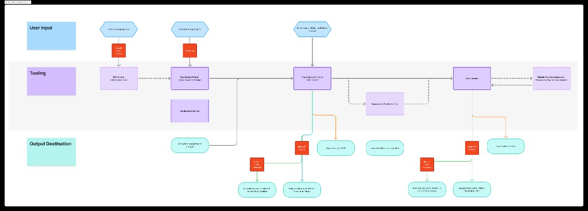

Automating the intake and consolidation of software requirements from Toyota/CA sources into JAMA for Woven's SV&V team.
Requirements arrive scattered, change without warning,
and are consolidated entirely by hand.
Autonomous driving software was written before formal requirements were established. Knowledge is tribal and scattered inside Woven.
Lower priority — internal to Woven, more available solutions.
Requirements flowing from Toyota via the CA liaison team into Woven are scattered across tools, poorly structured, and change without any notification reaching the right teams.
Externally constrained, harder to solve. Confirmed priority by Julia Pralle.
No single source of truth. No centralized visibility.
SWRDs as markdown/YAML. Primary source for Lane Change. Not directly surfaced — accessed via PDM docs.
Requirements management platform. Ground truth — but populated manually by copy-paste from Git.
PRD and URD documents from CA/PDM team. Nick reviews these daily alongside Git files.
Additional documentation. No systematic connection to JAMA or change tracking.
URD spreadsheets from CA. Japanese + English descriptions — used for context only.
TBDs only resolvable by developers — who often don't know the answer either.
Lane change SWRDs managed manually by Hannah
To document each component (e.g. Lane Change) — could be reduced to days
Automated notifications when Toyota updates requirements mid-quarter
LLM test case effectiveness — but still requires full manual curation
Four personas. One broken pipeline.
06Primary user with the most acute pain. Manages 600+ lane change SWRDs, manually copying them into JAMA and tracking versions by hand. Uses Wovey (LLM) for test case drafting at ~90% effectiveness.
Reviews SWRDs from three sources to assess usability. Rejects overly prescriptive requirements and feeds back to product/CA teams.
Reverse-engineering requirements from existing code. Struggling with scattered sources, Japan timezone barriers, and tribal knowledge gaps. Targeting production by early 2029.
Manages the overall requirements flow. Implementing a formal approval phase and Change Requirement Board (CRB) for mid-quarter changes. Confirmed top-down intake as the priority.
Gather requirements from scattered sources and structure them into JAMA with full context and version tracking.
Detect when Toyota updates requirements and alert systems engineers before the impact is missed.
Auto-generate SWQT structure from approved requirements using LLM, reducing manual drafting from hours to minutes.
Surface problematic SWRDs (TBDs, over-prescriptive, legacy TSS-4) to reduce wasted review time upstream.
Trace requirements → test cases → implementation. Understand coverage and the blast radius of any change.
Other capability groups, non-Git sources, SBRD handling. Deferred until pilot success is demonstrated.
Automate the pipeline from Git-based SWRDs into structured JAMA entries — with change detection and gated test case generation.
09Three layers: what users provide, what the tooling does, and what gets produced.

Key design decision: Test case generation is gated by upstream approval — the system only generates tests after CA or product sign-off. This avoids building tests for SWRDs that will be rejected.
Daily job that checks for SWRD changes. Polling is the MVP — simpler than webhooks, requires no changes to Woven's infrastructure.
Compares old vs. new SWRD versions and surfaces what changed at section level: interface, specification, reason.
Extracts structured metadata from SWRD source. Standard format: header → reason → description → interface → specification.
Programmatically creates/updates requirements in JAMA. Existing Python REST client available. Must respect JAMA hierarchy and container structure.
Sends change digests via Slack/email. Flags mid-quarter changes with affected test cases for developer and manager review.
Calls AI service (Claude, ChatGPT, or OpenAI — subject to Woven access approval) to generate SWQT structure. Output requires human curation before JAMA entry.
Pilot: Lane Change SWRDs from Git → JAMA.
Everything else is Phase 2.
| ID | User | Story | Priority |
|---|---|---|---|
| RG-001 | Hannah | Notified when lane change SWRDs change at source, with a summary of what changed and a link. | Must |
| RG-002 | Hannah | Lane change SWRDs automatically structured and entered into JAMA — no manual copy-paste. | Must |
| RG-006 | Developer | Notified when an SWRD I'm implementing is updated mid-quarter, with a flag in JAMA marking it modified. | Must |
| RG-003 | Hannah | System auto-generates initial SWQT structure for curation after CA/product approval of the SWRD. | Should |
| RG-004 | Nick | See which SWRDs contain incomplete specs (TBDs) before review — sort/filter by TBD density. | Should |
| RG-005 | Julia | Dashboard showing SWRD count by status: ingested, pending review, rejected, approved for development. | Should |
| RG-007 | Andrea | Consolidated knowledge base for reverse-engineering — all docs indexed without searching tools separately. | Could |
Several blocking unknowns must be resolved before implementation begins.
16Source integration layer: Can we access Git repositories directly for SWRDs, or must we go through Woven's documentation layer (PRD Google Docs from PDM team)? This shapes the entire integration architecture.
JAMA structure and import configuration: How is JAMA configured for this project? What are its data validation rules? How does automation target the correct container in the hierarchy?
AI service API access: Can the system call external AI APIs (Claude, ChatGPT, OpenAI) inside Woven's environment? Are there restrictions, approval processes, or preferred alternatives?
GitHub/Stargate access for Atomic team: Will the team be granted access to Woven's requirements repositories? Access request is planned for week of 2026-03-09.
Solution interface model: Is this a UI, a CLI, or a fully automatic background service? How does Hannah manually trigger test case generation when ready?
Julia, CA, or product must validate ingested requirements. Automation makes review faster — it cannot eliminate it.
Requirements lock per quarter. Mid-quarter changes go through the emerging CRB (Change Requirement Board) process.
Established practices exist for where requirements live. The solution must work with existing sources, not ideal organization.
The system only gathers and structures pre-existing requirements. Tribal knowledge in developers' heads cannot be automated away.
Woven is implementing the CRB process now. The target workflow is not yet stable — but that's an opportunity to shape it.
Polling is the MVP (up to 24hr latency). Webhooks require GitHub Actions infrastructure changes and are deferred.
Resolve infrastructure unknowns first. Then build the sandbox POC.
19POC scope: Mock Git repo → polling script → SWRD parser → mock JAMA output → mock LLM test case generation. Validates the conceptual flow independently of infrastructure constraints.
SWRD — Software Requirements Document. Functional requirements from Toyota. Must be reinterpreted for Woven's IPA scope.
SWQT — Software Work/Interface Qualification Test. Test case derived from an SWRD, stored in JAMA with preconditions and test steps.
JAMA — Woven's requirements management system. Authoritative record for internal requirements and test cases.
CA — Customer Applications. Toyota's Japan-based liaison team that translates requirements from TMC to Woven.
CRB — Change Requirement Board. Emerging formal process at Woven to handle and track mid-quarter requirement changes.
URD — User Requirements Document. Parent-level requirement from Toyota; translated into SWRDs by the CA and product teams.
PRD — Product Requirements Document. Quarterly scoped doc listing which SWRDs are in scope for development that quarter.
IPA — Internal Product. Woven's internal product boundary/scope; SWRDs from Toyota must be reinterpreted for IPA level.
Wovey — Woven's internal LLM tool. Hannah uses it for test case drafting (~90% effectiveness, manual curation required).
TSS-4 — Toyota Safety System 4. Legacy rules-based production system; its outdated prescriptive requirements still appear in incoming SWRDs despite Woven's ML approach.